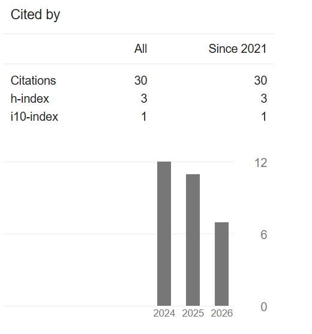

I am an Assistant Professor (Law) at Jigyasa University (since September 2026) and a legal scholar and practitioner with 5 years of experience as a Doctoral Researcher. I hold a Ph.D. in Human Rights Law from a very reputed and prestigious NAAC A++ Grade and NIRF ranked Central University of India, where I conducted groundbreaking empirical research on the impact of the Covid-19 pandemic on children's rights in Lucknow. My doctoral thesis provides valuable insights into the challenges faced by children during the pandemic and offers potential solutions to address these issues.
Throughout my 5-year doctoral journey, I also actively participated in numerous international and national conferences and seminars, presenting my research findings to diverse audiences. My work has been published in several reputed national and international peer-reviewed journals, including UGC-Care listed journals, underscoring the quality and relevance of my research in the field of child rights protection.
As an advocate enrolled with the Bar Council of Uttar Pradesh, I have extensive practical experience in various legal domains, including civil, criminal, human rights, and corporate law. My ability to devise compelling legal propositions, effectively mediate settlements, and champion the rights of my clients demonstrates my strong foundation in law and commitment to ethics.
With my combination of university teaching, doctoral research, academic excellence, and practical legal experience, I am well-equipped to excel in the field of Law and Academics. My passion for human rights, dedication to research, and ability to engage students in meaningful discussions make me an ideal candidate for senior academic positions in law.
Citation metrics as recorded on Google Scholar, reflecting the scholarly reach and influence of published research on child rights, technology, and human rights law.

Revolutionizing Early Warning Systems for Natural Disasters: Integrating AI and ML-driven Models, Tools, and PlatformsCo-authored with Rajendra Kumar (School of Legal Studies, Babu Banarasi Das University, Lucknow)
The research methodology and ethics were applied in conducting original research for the Ph.D. thesis. Book reviews and research paper writing were completed as part of the coursework requirements.
Assistant Professor (Law), University Teaching, Doctoral Researcher, Ph.D., Education, Advocate, Empirical Research, Lawyer, Academic Writing, Research, Legal Research, Student Mentorship.